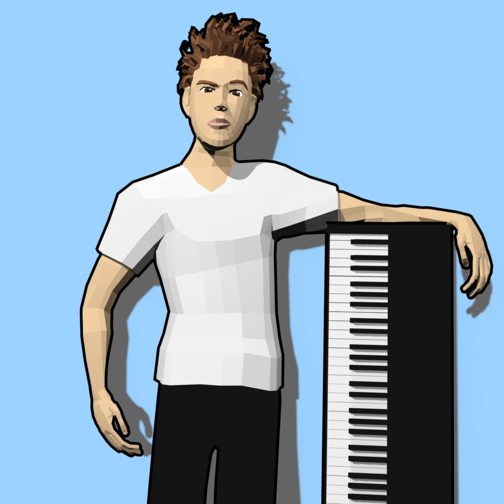

Hi! I'm Mark, and I am a multimedia artist that creates 3D animations about anything and plays piano in public. I also produce music, and you can find it on all streaming platforms.
You can find my animations on YouTube at youtube.com/@markpdyson. I post piano videos on my second channel at youtube.com/@markpdyson_piano.
Currently, I earn my living as a busking piano player in the subway tunnels of San Francisco (with the occasional gig, of course). As much as I love playing piano, it is my long-term goal to do independent animation full time.
